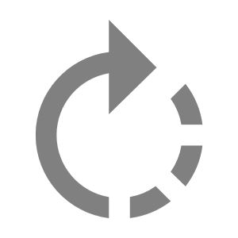
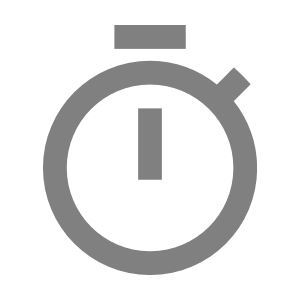
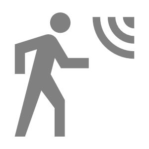

Machine technical documentation Operational document
This page allows to set oscillator parameters, read its status and start the homing cycle.

Commands
This section collects commands to force the machine to move the oscillator unit.

 | Start oscillator homing |
Parameters

 | Stop delay time |
 | Homing revolution count |
 | Pause time |
By refreshing it is possible to update the informations displayed below.
 | Sensor state |
 | Homing phase |